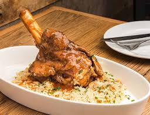

Arni Giouvestsi
Description
Giouvetsi epitomizes the simplicity of Greek peasant cuisine. Made up of just a few ingredients with a slow cooking and baking time, it’s hands down my favorite Greek meat dish. Nothing beats giouvetsi on a cold winter night. It’s hearty, nourishing, soul-feeding, and I can’t have just one serving. I LOVE coating it with a massive amount of shredded cheese, as if a snowy, wintry blast just hit a bowl of meat. Yum!
Ingredients
- 3.3 pounds (1.5 kilograms) front shank veal (or chicken or lamb)
- salt (pinch)
- white vinegar (sprinkle)
- 1 tablespoon olive oil
- 2 medium onions
- 2 tablespoons vegetable oil
Instructions
- Cut the veal into 2-inch cubes; do not debone. In a large stockpot, pour in sufficient water to cover the meat. Toss in 2 to 3 dashes of salt, and drizzle in a touch of vinegar. Boil for 10 minutes. Skim the froth with a slotted spoon, then remove the meat and place into a bowl. Rinse the pot.
- Pour the olive and vegetable oils into the stockpot. Chop the onions into ½-inch cubes, toss in, and sauté over medium-high heat. Add the veal cubes, and cover the meat with hot water from a boiling kettle. Partially cover the pot, and stir. Bring the pot to a boil, then reduce to medium-high heat. Feed the pot with boiling water, if needed. Continue cooking for 45 minutes, then mix in the tomato juice, salt, and pepper. Stir, partially cover the pot, and cook for another 10 minutes. Set aside.
Preheat the oven to 395°F (200°C).
- Add the kritharaki to a large baking dish (ideally, a round clay baking dish), spreading the pasta around with your fingers. Mix in 4 cups of hot water from a boiling kettle, and bake. Stir occasionally, making sure the kritharaki doesn’t stick to the dish, while allowing the pasta and water to reach a boil (about 15 minutes). Then, mix in the tomato juice, and combine the veal and its broth. Bake for 10 minutes. Turn off the heat, and let the giouvetsi stand in the oven for an additional 10 minutes, or until the pasta thickens.
- Remove from oven. Let cool, then top with grated Romano cheese. Serve with bread and red wine.